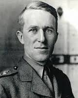
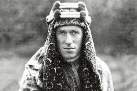

THOMAS EDWARD LAWRENCE (1888-1935)
Người hỡi bao giờ người hiểu rằng
thất bại làm cho người cao cả lên.
Geothe.
Ở nơi nào đó có một cái gì tuyệt đối,
chỉ nó là quan trọng thôi; mà tôi kiếm nó
không ra. Do đó tôi có cảm tưởng rằng tôi
sống không mục đích.
T. E. Lawrence
Đọc tác phẩm của các học giả Tây phương nghiên cứu về triết học Đông phương ta thường tìm được nhiều ý nếu không phải là mới mẻ thì cũng lý thú. Họ như những nhà du lịch phương xa, nhận thấy ở bản xứ những đặc điểm mà chính thổ dân vì quá quen rồi, không lưu ý tới.
Chẳng hạn, xét về bảy đức chính theo quan niệm của đạo Nho, tức những đức: nhân, nghĩa, lễ, trí, tín, dũng và thành, chúng ta chỉ bàn đi bàn lại về đức nhân, cho nó là quan trọng nhất. Mà nó quan trọng thật; có thể nói rằng nó gồm cả sáu đức kia, nhưng vì quá chú trọng tới nó mà ta gần như quên hẳn những đức kia đi, nhất là đức thành và đức tín.
Vì vậy khi đọc bài La Sincérité chez les orientaux de la civilisation confucéenne của cố linh mục Cras đăng trong tạp chí Sud-est asiatique, tôi thấy vui như vô tình gặp được một gia bảo đã bỏ quên một xó trong kho từ lâu. Vị học giả đó đại ý cho rằng không có một hệ thống siêu hình học hoặc luân lý học nào mà đề cao đức thành bằng đạo Nho, một đức quan trọng vào bực nhất, gồm tất cả những qui tắc chính về đạo đức mà lại bao quát được những ảnh tượng nguy nga nhất về sự vật trong một nhân giới siêu hình. Và lời của Khổng Tử: «Thành giả, tự thành dã», có một âm vang rất mới mẻ ở thế kỷ XX này, nó làm cho ta phải đặt hết tâm trí vào, mà trong tâm hồn ta dấy lên vô số tư tưởng và hoài vọng.
Tư tưởng của ông rất xác đáng và đọc xong bài đó, tôi nghĩ đến một đức nữa cũng thường bị bỏ quên, nhất là thời này, đức tín. Tín liên hệ mật thiết với thành, nên ta thường nói thành tín. Có thành rồi mới có tín, mà thiếu tín tất không thể thành được.
Đổng Trọng Thư đời Hán đặt đức tín ngang hàng với bốn đức nhân, nghĩa, lễ, trí (năm đức đó gọi là ngũ thường, tức năm đức mà mọi người đều phải có); và như vậy là ông đã phát huy được một phần học thuyết của Khổng Tử, vì tuy không nói rõ ra, nhưng Khổng Tử coi tín là một đức rất quan trọng. Trong Luận ngữ ông bảo:
«Quân tử chủ trung tín» (Học nhi).
«Nhân vô tín, bất tri kì khả dã» (Vi chính).
Đại học cũng có câu:
«Dữ quốc nhân giao, chỉ ư tín».
Cả những kẻ không thực hành đúng đạo Nho, chủ trương bá đạo, dùng chính sách độc tài như Thương Ưởng, tuy bỏ đạo nhân mà vẫn phải trọng tín.
Chiến quốc sách chép Thương Ưởng được Tần Hiếu công phong chức Tả thứ sử - tức như chức Thủ tướng ngày nay - để lo việc chính trị trong nước (359 tr. Tây lịch). Thương Ưởng muốn biến pháp nghĩa là thay đổi chế độ, làm một cuộc cải cách triệt để, nhưng sợ dân không tin, chưa dám thi hành, mới nghĩ ra một kế, đem một cây gỗ dài ba trượng đặt ở cửa Nam chợ Hàm Dương rồi ra lệnh ai vác được cây gỗ đó sang cửa Bắc thì được thưởng 10 nén vàng.
Dân chúng nghi ngờ (công việc dễ như vậy sao thưởng hậu vậy), còn trù trừ, không hiểu ông muốn gì. Ông tăng số tiền thưởng lên 50 nén. Một người xông vào vác đại đi xem sao. Rốt cuộc Thương Ưởng giữ lời hứa, khen người đó là biết vâng lệnh trên, rồi thưởng vàng và bảo:
- Ta không bao giờ thất tín với dân. Từ đó, mọi người đều tin Thương Ưởng, nhờ vậy mà ông thực hành được biến pháp.
Từ việc xử thế xã giao hàng ngày đến việc trị dân nhất là trong việc trị dân không có đức tín thì mọi việc phải hỏng mà không có xã hội nào có thể tồn tại được, nếu không có một chút tín. Ta cứ tưởng tượng giá trị của đồng bạc mỗi ngày một khác, lên xuống bất thường, buôn bán với nhau thì kẻ nào cũng nuốt lời, tới giờ làm việc mà các công sở và tư sở không có nhân viên nào cả, hẹn nhau tới ăn cơm hoặc bận công việc mà không tới..., tóm lại, nếu không ai có thể tin ai được thì còn gì là quốc gia, là xã hội? Nếu tạo hóa cũng không có đức tín: thủy triều lên xuống không theo một luật nào cả, mặt trời mặt trăng không hiện đúng giờ đúng ngày, bốn mùa không đều đều thay phiên nhau qua lại, mà cái bao tử cũng không đúng giờ thấy đói thì vạn vật chắc không phát sinh được.
Đức tín quan trọng lắm vậy, đạo Nho đề cao nó là phải quá. Cho nên gian hùng như Tào Tháo là cùng mà cũng phải giữ lời hứa để cho Quan Vân Trường đi tìm Lưu Huyền Đức, mặc dầu biết rằng Quan mà đi thì sau này rắc rối cho mình. Còn Quan Vân Trường sau vụ Huê Dung tiểu lộ, vì Tào Tháo trước kia giữ chữ tín với mình, mà đành tự nạp thân cho Gia Cát Lượng xử tội, cũng là để giữ chữ tín nữa.
Tới những nhà Nho vô danh hễ có tư cách một chút cũng đều coi trọng đức tín. Một ông bác tôi đã hứa với một ông bạn ngày nào đó tới chơi thì dù mưa gió, bão táp cũng lội hai ba cánh đồng chiêm mà tới cho được, trừ khi nào đau ốm mới dám lỗi hẹn. Những lời hứa như vậy ngày nay chúng ta cho là lời xã giao, có khi vừa thốt ra đã quên rồi, thì các cụ cho là những lời danh dự. Câu «nhất ngôn kí xuất, tứ mã nan truy» quả là đúng đối với những người chịu ảnh hưởng của đạo Nho.
Xét lịch sử phương Tây về thời cổ thì chúng tôi không dám biết, nhưng trong vài ba trăm năm nay thì chúng tôi thấy đại đa số nhà cầm quyền của họ không coi trọng chữ tín. Một chính khách Ai Cập đã phàn nàn rằng chính phủ Anh đã sáu chục lần nuốt lời hứa, gạt gẫm Ai Cập mà không chịu trả độc lập cho Ai Cập. Anh đã bao nhiêu lần nuốt lời hứa với Miến Điện, Ấn Độ, Mã Lai và vô số cựu thuộc địa khác nữa? Rồi Pháp đã bao nhiêu lần nuốt lời hứa với chúng ta, với Syrie, Liban, Maroc...? Họ đã vung biết bao nhiêu tiền, đổ biết bao nhiêu máu, nguyên do cũng chỉ tại họ không có đức tín. Chẳng riêng gì Anh, Pháp, hầu hết các nước Âu Mỹ đều cho chính trị, ngoại giao là những mánh khóe để lừa gạt nhau, và những hiệp ước họ long trọng ký với nhau chỉ có giá trị một tờ giấy lộn; mà ngay khi họ hạ bút ký thì cả hai bên đều nghĩ thầm, đều tin rằng khi nào hiệp ước không còn có lợi cho họ thì họ sẽ không thi hành nữa. Họ chỉ có một thứ luân lý bè đảng, vị tư lợi, chứ chưa có một thứ luân lý quốc tế, vị công ích.
Có lẽ vì nghĩ «sống với chó sói phải tru với chó sói», nên các chính khách phương Đông chúng ta ngày nay cũng lấy cái tật «hứa phượu» của bạn đồng nghiệp của họ ở phương Tây. Biết bao nghị sĩ khi ứng cử thì hứa trời hứa đất, đắc cử rồi thì quên hết, mà đã chẳng lấy vậy làm xấu hổ, còn tự đắc là khôn khéo nữa.
Vì nhận thấy rằng cái mà người Trung Hoa thời xưa gọi là lời nói của con người (chữ tín gồm chữ nhân với chữ ngôn), thời này y như tấm giấy bạc giả, cho nên đọc xong tiểu sử của Thomas Edward Lawrence, tôi bồi hồi vừa thương cho ông, vừa phục ông là cái lương tâm còn sót lại của Âu Mỹ mà chép lại mấy trang dưới đây để độc giả suy ngẫm.
Thomas Edward Lawrence được thế giới tặng cho cái huy hiệu là ông vua không ngôi của Ả Rập, là khách phiêu lưu kỳ dị nhất của thế kỷ XX, là nhà chinh phục tài giỏi nhất của thế kỷ XX; tôi cho rằng nếu gọi ông là người quân tử của phương Tây thì có lẽ vong hồn ông được an ủi hơn. Những phút vẻ vang của ông không phải là cái lúc ông làm đại tá trong quân đội Anh và làm một ông vua không ngôi ở Ả Rập, mà là cái lúc ông vứt bỏ những lon cùng huy chương để trả lại Anh hoàng với những lời phẫn uất đại ý rằng: Ông đã thay mặt chính phủ Anh hứa vài điều với Faycal (một thân vương Ả Rập), chính phủ Anh đã không giữ những lời hứa đó thì rất có thể một ngày kia ông sẽ cầm khí giới chống lại quân đội Anh để bênh vực Ả Rập, như vậy thì ông không thể nào đeo những huy chương của Anh được.

Trong lịch sử nhân loại, có lẽ chưa có một viên sĩ quan nào dám có thái độ ngạo nghễ như vậy đối với quốc vương của mình.
Thomas Edward Lawrence sinh ngày 15.8.1888 ở xứ Galles (Anh), có một người anh và ba người em trai. Thân phụ của ông, Thomas Robert Lawrence không làm gì cả, chỉ săn bắn, câu cá, chơi thể thao, chụp hình, sống nhờ một số lợi tức nhỏ, nên phải rất tiết kiệm. Thân mẫu ông, Sarah Junner, tính tình nghiêm khắc, dạy lấy các con. Nhờ ảnh hưởng của cha mẹ mà ông có một nghị lực gang thép, một lương tâm rất ngay thẳng, một lối sống rất khắc khổ và một lòng ham hiểu biết mọi sự. Gia đình ông gần như nhà tu: trừ vài bà cô hay dì đã lớn tuổi, còn tuyệt nhiên không có phụ nữ trẻ tới chơi.
Ông thông minh sớm - năm tuổi đã biết đọc và viết - nhưng không phải vào hạng kỳ đồng. Óc mẫn tiệp, nhớ mau và dai, nhất là có một sức chịu đựng rất bền: năm 21 tuổi có hồi cưỡi lạc đà đi trong sa mạc Ả Rập luôn 3 ngày, mỗi ngày đi được 180 cây số; cũng vào khoảng đó ông đi bộ hơn hai tháng ở Syrie được gần 1.800 cây số. Sở dĩ được vậy là nhờ ngay từ hồi nhỏ ông đã tập làm mọi việc lặt vật trong nhà và ham muốn thể thao: xe đạp.
Năm 1896, ông lại học ở châu thành Oxford, rồi năm 1908 vô trường Jesus College để chuyên về sử, được học bổng của chính phủ. Ông rất ham đọc sách, thường nằm sấp trên giường, chung quanh la liệt sách vở, khi nào buồn ngủ thì gục đầu lên trang sách rồi tỉnh dậy, tiếp tục đọc.
Mới 13 tuổi ông đã thích tìm hiểu kiến trúc cổ, đi xe đạp một mình khắp nước Anh để coi các di tích. Ông có thể đạp một ngày được 160 cây số. Ai cũng phục ông là một lực sĩ tí hon vì ông nhỏ người, thấp mà sức rất mạnh.
Có hai sự kiện quyết định đời ông.
Sự kiện thứ nhất là hồi 17 tuổi ông hay được chuyện này làm ông đau khổ suốt đời và thay đổi hẳn tâm trạng: mấy anh em ông chỉ là những đứa con hoang.
Thực ra thân phụ ông tên là Thomas Robert Chapman, gốc gác quí phái ở Irlande, trước cưới một người vợ đẹp nhưng tính tình quạo quọ và lẳng lơ. Bà ta sinh được bốn đứa con gái mà đều không phải là con của chồng. Ông chồng nhắm mắt làm thinh, rồi tằng tịu với Sarah Maden, nữ phó ở trong nhà.(1)
Một ngày nọ ông bỏ nhà cửa, sản nghiệp, dắt Sarah Maden theo, đổi tên Chapman ra Lawrence rồi qua xứ Galles ở với nhau, cắt đứt mọi liên lạc với vợ và với quá khứ. Sarah Maden cũng đổi tên là Sarah Junner. Nàng là con một người thợ máy, hơi có học, mạnh khỏe, can đảm. Hai ông bà sống chung với nhau, hòa thuận, vui vẻ mà không đến nỗi túng thiếu, nhờ tài quán xuyến, đức cần kiệm của Sarah. Nhưng họ không làm hôn thú được vì Thomas không xin ly dị được với người vợ trước.
Hay chuyện đó, Lawrence bỗng có mặc cảm của một đứa con hoang, hết tôn kính cha mẹ, hết tin những bài luân lí trong gia đình và trường học rồi đâm ra khinh cả cái xã hội mà ông cho rằng chỉ có bề ngoài là đàng hoàng còn bề trong thì thối nát, ghét cả cái thế giới bất công mà ông đang sống, ghét cả việc giao hoan. Vì ông cho rằng đó là nguồn gốc của mọi sự khổ não ở đời, có khi còn là nguồn gốc của mọi sự tủi nhục nữa.
Chán đời qua, ông không chịu nổi không khí trong gia đình, trốn cha mẹ, anh em, từ bỏ cả dĩ vãng như cha, đổi tên, tăng tuổi để xin nhập ngũ trong đội pháo binh hoàng gia. Khi thân phụ tìm ra được ông(2), có người nói là chín tháng sau, có người bảo chỉ vài tuần sau phải vội vàng «chuộc» ông về.
Ông miễn cưỡng về nhà, nhưng vẫn chán nản mặc dầu vẫn yêu người thân. Tính tình ông hóa ra lầm lì, ít nói, buồn bực. Cha mẹ ông biết vậy, cất cho ông một phòng nhỏ ở một góc vườn để ông đóng cửa đọc sách.
Sau thân phụ ông nghĩ ra một cách: cho ông đi du lịch để thay đổi không khí. Ông nắm ngay lấy cơ hội, xin qua Pháp chơi.
Trước sau ông qua Pháp ba lần(3), lần thứ nhất vào tháng 8, năm 1906, lần thứ nhì vào tháng 8 năm 1907 và lần thứ ba vào năm 1908, lần nào ông cũng chỉ mang theo ít quần áo, một số tiền nhỏ và một chiếc xe đạp. Lần thứ nhất ông đi theo một người bạn thăm miền Normandie và Bretagne, nghiên cứu các lâu đài cổ, tới đâu cũng vẻ bản đồ và ghi chép để làm tài liệu cho luận án sau này. Lần thứ nhì ông đi với người anh tên là Robert (có sách nói rằng cả hai lần đó ông đều đi một mình), thăm miền Anjou và Bretagne. Lần thứ ba thì hình như ông đi một mình và cuộc đi du lịch đã lưu lại một ấn tượng rất sâu trong tâm hồn ông.
Tới Baux ở miền Nam nước Pháp, lần đầu tiên ông thấy Địa Trung Hải lấp lánh sau một hàng cây, như một phiến ngọc lam rực rỡ. Ông cảm xúc mãnh liệt, tưởng chừng như không khí phảng phất có mùi hương liệu từ phương Đông bay qua. Và văng vẳng có những tiếng náo nhiệt của những đô thị thời cổ vọng lại: Smyrne, Constantinople, Tyr, Sidon, Beyrouth, Tripoli... những tên sang sảng đó đưa ông vào cõi mộng và ông mơ tưởng tới ngày được qua thăm phương Đông huyền bí, cái phương Đông ở bên kia bờ Địa Trung Hải đã thu hút ông từ khi ông đọc sử Hi Lạp, sử La Mã, sử Thập tự quân, nhất là đọc cuốn Travels in Arabia deserts (Du lịch trong sa mạc Ả Rập) của Ch. Doughty.
Sự kiện thứ nhất ảnh hưởng đến đời ông, tức sự phát giác rằng mình chỉ là một đứa con hoang, ông không nhắc tới trong các tác phẩm của ông. Điều đó rất dễ hiểu. Trái lại sự kiện thứ nhì, tức cái mộng mà ông ấp ủ từ nhỏ, mộng phát động một phong trào quốc gia, thì ông đã chép lại kỹ lưỡng trong cuốn Les sept piliers de la Sagesse. Ông viết:
«Ngay từ hồi bé, được đọc cuốn Super Flumina Babylonis, tôi đã nảy ra ý muốn một ngày kia được làm trung tâm một phong trào quốc gia nào đó.»
Rồi ít hàng sau:
«Lớn lên chút nữa, học trường City School ở Oxford, tôi đã mơ mộng làm biến đổi châu Á, bắt nó phải có một hình thức mới hợp với thời đại này.»
Nghĩa là ông quyết tâm phát động một phong trào quốc gia ở châu Á.
Nhiều người ngờ rằng ông chưa chắc đã thành thực khi viết những hàng đó vì hai lẽ. Lẽ thứ nhất ông viết sau thế chiến thứ nhất, nghĩa là sau chiến tranh Ả Rập-Thổ đã kết liễu, lúc đó ông muốn tô điểm gì cho cái tuổi thơ của ông mà chẳng được; lẽ thứ nhì mà người ta khó tưởng tượng được một đứa trẻ mới trên mười tuổi mà đã có khi phách như vậy.
Có thể Lawrence đã tô thêm những nét qua rõ lên tuổi thơ của ông, nhưng chúng ta cũng phải nhận điều này: nếu hồi nhỏ ông chưa có chí hướng rõ rệt như vậy thì ít nhất cũng đã có một xu hướng thúc đẩy ông tới hành động thời tráng niên của ông; nếu không thì làm sao ta giải thích được lòng say mê cuốn Arabia deserta của Doughty, say mê chiến thuật của Thập tự quân cùng những đồn lũy thời trung cổ. Rồi làm sao hiểu được sự quyết tâm sống một đời kham khổ ngay từ hồi nhỏ: ba năm liền, khi còn đi học, ông ăn toàn trứng, sữa, rau cỏ, trái cây, y như dân Ả Rập. Và cũng như dân Ả Rập, có hồi ông tập nhịn đói luôn ba ngày để quen chịu đựng những thiếu thốn trong sa mạc. Làm sao hiểu được ông thờ ơ với Đại Tây Dương mà thích riêng có Địa Trung Hải như trong đoạn trên chúng tôi vừa kể. Quả thực là có một sức huyền bí nào hướng ông về miền Ả Rập, sức huyền bí đó hồi nhỏ có lẽ ông không cảm thấy, lớn lên mới nhận ra sau khi phân tích tâm trạng của mình, rồi chép lại trong cuốn Les sept piliers de la Sagesse.
Được trông thấy Địa Trung Hải rồi, ông đã tìm thấy con đường chờ đợi mình. Ông nhất định qua phương Đông. Trở về Anh, ông viết thư cho Doughty để tỏ bày chí hướng của mình và hỏi thăm về Ả Rập. Doughty tưởng ông chỉ là một du khách tài tử, có vẻ không khuyến khích ông, bảo rằng mình chỉ mới biết miền Syrie thôi, mà ở đó tháng bảy và tháng tám trời nóng ghê gớm, đêm cũng như ngày, đi bộ không nổi. Nhất là xứ đó dơ dáy, không có nước sạch để uống, thế nào cũng mắc bệnh.
Lawrence đọc thư thì mỉm cười. Ông đã nhất định đi thì không ai ngăn cản ông được. Ít tháng sau, ông tìm được một cơ hội để đi Beyrouth. Trước khi đi, ông học ít tiếng Ả Rập với một mực sư ở Oxford, gốc gác Syrie. Ông mang theo một máy ảnh, ít quần áo, ít tiền rồi xuống Tàu.
Trong khoảng hơn hai tháng, ông đi bộ non 1800 cây số để coi các lâu đài, thành quách ở Nazareth, Harosheth, Athlit, Haifa, Acre, Ka'aru, Tyr, Sidon, Beyrouth, Lattaquié, Alep ở Syrie, Liban, Palestine. Có lần bị một tên cướp Thổ Nhĩ Kỳ đánh cướp hết đồ, hết tiền, ông phải lại các nhà thờ xin ở nhờ một ít lâu, rồi lại tiếp tục cuộc hành trình một mình, tới đâu xin ngủ trọ đó, ăn như người Ả Rập, sống theo lối Ả Rập, tập nói tiếng Ả Rập.
Lại có lần ông phải co quắp ngủ dưới chân tượng Ferdinand de Lesseps, ngay trên cái đập, sóng mỗi đợt dâng lên là vỗ vào chân ông. Nhờ lang thang như vậy mà ông biết được nhiều về kiến trúc các thành quách cổ, và về các dân tộc Ả Rập mà ông bắt đầu yêu mến như đồng bào của mình vậy. Họ làm ông nhớ lại những kị sĩ thời trung cổ châu Âu, và ông thấy cuộc đời nghèo nàn, khắc khổ, nay đây mai đó của họ có cái gì quyến rũ lạ lùng.
Ông chen vai thích cánh với những người Ả Rập áo dài lụng thụng đi chân không trong những ngõ hẻm thăm thẳm ở Beyrouth, Damas; ông leo lên núi nhìn bãi biển cát đỏ chạy dài tới Tripoli; ông tắm trên bờ suối Adonis, dưới một ánh sáng chói lọi, thứ ánh sáng mà ở quê hương ông và ngay cả ở miền nam nước Pháp ông chưa từng thấy, một thứ ánh sáng cuồn cuộn trên mặt biển, trên sa mạc, thấm vào từng tia máu trong cơ thể con người.
Ông say mê sống chung với dân bản xứ, gõ cửa những căn nhà tồi tàn để xin tá túc, giỡn với những đứa nhỏ mắt đen láy láy, bên cạnh những bầy gà và dê; ông cũng ngồi chồm hổm trên đất uống sữa dê với chúng, cũng rót một tia nước nhỏ trong một cái bình sành để rửa mặt, rồi đêm tối, cũng nằm lăn trên đất ngủ chung với thổ dân, cùng đắp chung một chiếc mền đầy rận với họ.
Cảnh những đoàn lạc đà chậm rãi bước chân trên sa mạc, những thiếu nữ Ả Rập đội bình lại giếng lấy nước; cảnh đêm trăng tĩnh mịch, xa xa vẳng lên tiếng hát từ nghìn xưa của những dân tộc chất phác đó, cảnh mặt trời lặn sau đồi cát, rực rỡ như xa cừ, tất cả những cảnh đó làm ông say mê quên hẳn quê hương, quên cả gia đình. Tiền thân ông chắc đã sinh ở đâu đây, trên bán đảo Ả Rập này.
Và lạ thay! Ông qua đây mới đầu là để nghiên cứu lịch sử Thập tự quân, mà bây giờ ông không để ý tới những anh hùng thời cổ đó nữa, chỉ thích khảo sát tính tình và đời sống của dân Ả Rập. Mới có hơn một tháng mà tâm hồn ông sao thay đổi mau như vậy?
Tháng 9 năm đó (1909), ông trở về xứ, tự nhủ rằng lần đó chỉ mới là lần sơ kiến với bán đảo Ả Rập, sau này sẽ trở lại lâu hơn...
Năm sau, nhờ những tài liệu thu thập được trong cuộc du lịch, ông soạn xong luận án về «Khoa kiến trúc quân sự của Thập tự quân».
Năm 1911, ông theo một phái đoàn của viện Tàng cổ Anh qua đào di tích ở Carchemish, trên bờ sông Euphrate. Lần này ông ở luôn ba năm rưỡi, nói thạo tiếng Ả Rập, được nhiều người Ả Rập coi như bạn thân. Làm sao họ không mến ông được? Ông thân mật với họ, bá vai, gác đùi nằm với họ, ăn uống như họ, sống như họ, bàn bạc với nhau về những vấn đề của họ, những lo âu, ước nguyện của họ.
Lần lần hiểu cách sống, cách suy nghĩ và tâm lí của họ rồi, ông thấy rằng đầu thế kỉ XX, các dân tộc Ả Rập muốn vùng vẫy để thoát cái ách của Thổ Nhĩ Kì. Khắp nơi, từ các châu thành bên bờ biển tới các ốc đảo giữa sa mạc, đâu đâu họ cũng mong mỏi được tự do, độc lập. Họ tin cậy ông, hỏi ý kiến ông về cách hành động; ông không dám xúi họ bạo động vì không có quyền gì trong tay mà cũng ngại sẽ gây những khó khăn cho sự bang giao giữa chính phủ Anh và chính phủ Thổ, gây sự ghi ngờ cho các quốc gia như Đức, Ý, Pháp, nhưng ông thường đàm đạo với các nhà cách mạng Ả Rập, gián tiếp giúp ý kiến cho họ. Mà trong thâm tâm ông cũng mong có cơ hội giúp họ thoát được cái ách của Thổ.
Nhưng còn vấn đề này phải giải quyết nữa. Đế quốc Thổ như một con bệnh hấp hối rồi, không sao tồn tại được lâu. Khi nó sụp đổ thì nó sẽ thuộc về nước nào? Nga, Đức hay Pháp? Pháp có ưu thế hơn cả vì văn hóa Pháp được truyền bá từ mấy thế kỉ nay ở Beyrouth, Damas. Nhưng ở với Pháp, dân tộc Ả Rập khó mà mạnh được, vì dân tộc Pháp không có tinh thần tổ chức, mạo hiểm bằng Anh - ông nghĩ vậy - mà lại thiệt cho Anh. Rốt cuộc ông nghĩ Anh nên lãnh cái nhiệm vụ «giải thoát» Ả Rập, và khi giải thoát rồi thì cho Ả Rập độc lập mà liên kết với Anh. Ông nghĩ tới Anh mà thực là ông nghĩ tới ông vậy. Nhiệm vụ giải thoát đó về Anh, tức là về ông, chứ ai?
Chính trong thời gian ở bờ sông Euphrate, ông soạn một tiểu thuyết nhan đề là Seven Pillars of Wisdom(4) (Hiền minh thất trụ), để kể những cuộc mạo hiểm của ông trong bảy thành phố Ả Rập: Caire, Smyrne, Constantinople, Beyrouth, Alep, Damas và Médine. Cuốn đó viết xong rồi đốt đi vì ông cho là non nớt, chưa suy nghĩ kỹ.
Tháng 5 năm 1914, ông trở về Anh, chưa đầy một tháng thì có tiếng súng nổ ở Sarajevo. Trừ một số người trong số ngoại giao ở Âu, Mỹ, khắp thế giới không ai ngờ rằng vụ ám sát thân vương Ferdinand lại làm cho nhân loại đổ máu suốt bốn năm trường.
Chính tiếng súng đó đã mở cho ông một cuộc đời mới, đã đem lại cho ông cái «sứ mạng mà trời đã giao phó cho ông từ khi ông mới sanh» như ông nói cái sứ mạng mà mấy năm nay ông đã chuẩn bị để thực hiện cho được. Ông tin rằng dân chúng Ả Rập thế nào cũng nổi dậy đuổi Thổ đi, mà chỉ có ông là giúp họ thành công được thôi.
Đầu thế chiến, Thổ đứng về phe Đức, muốn kéo khối Ả Rập về với mình, buộc thân vương Hussein của xứ Hedjaz tuyên chiến với đồng minh vì Hussein có uy quyền trong các xứ Ả Rập: ông có phận sự che chở thánh địa La Mecque. Ông không chịu, muốn đứng ngoài xem phần thắng về bên nào rồi sẽ ngả theo bên đó.
Anh cũng muốn kéo Ả Rập về phe mình. Lawrence đề nghị với nhà cầm quyền liên lạc với các quốc vương Ả Rập, giúp đỡ họ đánh Thổ, Thổ sẽ thua vì đã kém về lực lượng lại bị Ả Rập ghét.

Hồi đó ở Anh có hai cơ quan coi về những vấn đề phương Đông: cơ quan Indian Office, trụ sở ở Bombay, do Saint-John Philby chỉ huy và trực thuộc chính quyền Anh ở Ấn Độ; cơ quan Arabia Office, do Allenby chỉ huy, trực thuộc bộ Ngoại giao ở Luân Đôn. Hai cơ quan không liên lạc với nhau, có chính sách riêng mà chính sách đó đôi khi tương phản nhau.
Indian Office lo bảo vệ con đường bộ liên lạc Ấn Độ với châu Âu, cho nên chú trọng tới miền Mésopotamie và muốn che cho những quốc vương Ả Rập ở phía vịnh Ba Tư, như Mubarrak, quốc vương xứ Kowait và Ibn Séoud, quốc vương xứ Hasa và Nedjd. Arabia Office trái lại, lo bảo vệ kênh Suez, tức con đường từ biển Ấn Độ qua Anh, nên tìm cách liên lạc với các quốc vương Ả Rập ở bên bờ Hồng Hải, mà trong số những quốc vương này Lawrence để ý nhất tới Hussein. Hussein vô tài mà lại tham bỉ, nhưng hai người con trai của ông, Abdallah và Faycal, có nhiều khả năng.
Khoảng giữa năm 1915, nghe lời khuyên của Lawrence, bộ Ngoại giao Anh lựa Hussein, hứa với Hussein rằng nếu đuổi được Thổ ra khỏi bán đảo Ả Rập thì Anh sẽ vận động với các cường quốc cho Ả Rập độc lập.
Hussein tin lời kêu gọi nghĩa quân chống lại Thổ, bắt một số quân nhân Thổ ở La Mecque làm tù binh. Anh giúp bốn chiếc tiểu liên và 3000 súng trường, nhờ vậy Ả Rập thắng Thổ ở Rabegh, Yanbo và Taif; chỉ trong vài tháng bắt được 5000 lính Thổ.
Nhưng Hussein không tiến thêm được nữa, không chiếm được Médine.
Lúc đó, Đồng minh tưởng con bệnh Thổ đã quá suy, chỉ còn đánh một đòn mạnh là hạ được, nên một mặt liên quân Anh Pháp tấn công Dardanelles để mở đường vào Constantinople; mặt khác đội quân Ấn Độ do tưởng Towshend chỉ huy vượt vịnh Ba Tư đổ bộ ở Bassorah, tiến tới Ctésiphon, ở phía nam Bagdad, hi vọng đè bẹp Thổ trong một thời gian ngắn mà rảnh tay đánh Đức (coi bản đồ trang 148).
Không ngờ lính Thổ vốn can đảm lại được Đức giúp khí giới, chống cự lại mãnh liệt, Đồng minh thua cả ở hai mặt trận. Tại Dardanelles, liên quân hao tổn mấy ngàn sĩ tốt rồi phải rút lui. Tại Ctésiphon, tướng Towshend bị Thổ chặn đứng, cũng phải rút lui nữa, rồi bị vây ở Kut-el-Amara, gần Bassorah. Anh không làm sao phá vòng vây được, chỉ còn hai cách: đầu hàng hoặc bị tiêu diệt.
Thấy tình hình quá nguy, bộ tham mưu ở Caire mới nghĩ tới Lawrence, và Lawrence lúc này có cơ hội để hoạt động.
Ông tới Bassorah, thấy bộ máy chiến tranh của Anh nặng nề quá, không hợp với hoàn cảnh. Các sĩ quan Anh trong đội quân Ấn, nhiễm cái thói quan liêu, hành quân ở sa mạc mà mang theo đồ chơi golf và ten-nít! Vì vậy họ tiến thoái rất chậm, bị Thổ đuổi và bủa vây. Ông chỉ trích họ, bảo họ rằng chiến thuật ở sa mạc cần nhất là uyển chuyển, lưu động. Họ bất bình, chỉ muốn tống cổ ông đi.
Sứ mạng của ông là thương thuyết với tướng Thổ, xin nộp một số tiền để Thổ giải vây cho Towshend. Việc đó thất bại. Ông nghĩ cách hô hào dân Ả Rập khởi nghĩa để phá Thổ ở hậu tuyến. Như vậy Thổ phải rút binh ở Kut-et-Amara mà chống cự lại với Ả Rập. Nhưng muốn hô hào Ả Rập khởi nghĩa thì phải hứa với họ rằng hễ chiến tranh kết liễu Ả Rập sẽ được độc lập. Cơ quan Indian Office không chịu, vì nếu cho Ả Rập độc lập thì Ấn cũng sẽ vịn vào đó mà đòi độc lập nữa thì đế quốc Anh sẽ mất một viên ngọc quí. Rốt cuộc Towshend đành phải đầu hàng và chuyến đó, Lawrence chẳng làm được việc gì cả.
Tuy nhiên ông được thêm nhiều kinh nghiệm và quyết tin rằng châu Âu không thể diệt Thổ được nếu không có Ả Rập giúp sức. Ông trở về Caire, rán thuyết phục bộ tham mưu Anh theo chính sách của ông: phải để cho Ả Rập khởi nghĩa chiếm Médine rồi tiến thẳng lên Damas mà giải thoát Syrie. Anh chỉ giúp khí giới, quân nhu và một số cố vấn thôi, chứ đừng đem quân vô. Phải kích thích tinh thần quốc gia của họ; nếu kích thích tinh thần tôn giáo thì sẽ thất bại vì về phương diện tôn giáo, Ả Rập thân với Thổ mà chống Âu. Nhất là Anh đừng để cho Pháp xen vô rồi sau này Pháp sẽ đòi chia phần. Một mình Anh giúp Ả Rập cũng đủ rồi. Khi đã thắng trận, Anh sẽ cho Ả Rập độc lập, Ả Rập rất mang ơn Anh mà liên kết với Anh; vì Ả Rập cần sự giúp đỡ của Anh về võ bị, kinh tế. Vậy là mục đích ông đã vạch rõ: công việc giải thoát Ả Rập là của riêng Anh, nghĩa là của riêng ông.
Chính phủ ông mới đầu còn do dự, sau phải nhận rằng ông có lí. Ông đề nghị suy tôn Faycal một người con của Hussein làm thủ lãnh phong trào giải phóng, và được phái tiếp xúc với Faycal ở Hamra, gần Médine.
Ông đi gấp trong ba ngày, chịu đói chịu khát, đêm ngủ trên đất, ngày chịu ánh nắng như thiêu của sa mạc, vào khoảng cuối tháng 10 năm 1916 tới Hamra, nơi đội quân của Faycal đóng trại. Lần đầu mới thoáng thấy Faycal một người thẳng như cây cột, rất cao, mảnh khảnh, vẻ lạnh lùng, trầm ngâm - Lawrence tin ngay rằng đã gặp được người mà ông tìm kiếm mấy năm nay ở Ả Rập, gặp được vị thủ lãnh tương lai của phòng trào giải phóng Ả Rập. Như một thuyết khách phương Đông, ông định tâm nói khích Faycal.
Hai bên chào nhau xong, Faycal hỏi ông đi đường có mệt lắm không, mất mấy ngày. Ông đáp. Faycal khen là đi mau lắm rồi lại hỏi:
- Ông thấy trại của chúng tôi ra sao?

- Đẹp lắm, nhưng khí xa Damas!
«Lời đó rớt xuống như một nhát kiếm giữa đám người ngồi trong phòng. Mới đầu mọi người xao động rồi ai nấy tự chủ được, nín thở trong một phút. Có lẽ vài người mơ mộng những chiến thắng sau này; có kẻ lại cho rằng Lawrence ám chỉ sự bại trận mới rồi của họ», vì Faycal được lệnh của thân phụ tấn công Médine mà thất bại.
Sau cùng, Faycal ngước mắt lên ngó Lawrence, mỉm cười đáp:
- Nhờ Chúa quân Thổ ở gần hơn!
Mọi người đều mỉm cười. Lawrence đứng dậy cáo từ về phòng riêng để nghỉ.
Buổi sơ kiến đó để lại cho ông một cảm giác đẹp. Ông thấy Faycal là một người đáng tin cậy hoàn toàn, một vị thủ lãnh được dân chúng ngưỡng mộ. Và ông vui lòng làm quân sư cho Faycal. Ít lâu sau Tổng tư lệnh Anh thay đổi tất cả tướng lãnh ở Ai Cập, và ông được trực thuộc Allenby, một người sáng suốt và hiểu ông.
Cái mộng giúp người Ả Rập giành lại độc lập nay có thể thực hiện được. Ông hăng hái tận lực hy sinh cho chính nghĩa Ả Rập vì ông không biết chút gì về những hoạt động của Indian Office và tin rằng một khi Ả Rập dã đuổi được Thổ đi thì Anh sẽ thừa nhận sự độc lập của họ.
Trong hai năm ông cải trang làm Ả Rập, có hồi lại cải trang làm phụ nữ Ả Rập nữa, sống chung với người Ả Rập, suốt ngày ở trên lưng lạc đà, đi khắp các nơi trong sa mạc, tiếp xúc với các thủ lãnh Ả Rập, khuyến khích họ, hô hào họ, do thám cho họ, lập kế hoạch cho họ.
Ông không có vẻ bệ vệ như các quan lớn cố vấn khác, trái lại sống rất bình dân và bình dị: sẵn sàng tiếp đón người Ả Rập, chăm chú nghe họ bày tỏ ý kiến, và họ tin cậy ông, ai cũng muốn gặp mặt ông một lần. Ông ngồi trong lều hay dưới những gốc chà là mà tiếp họ như tiếp người thân, tự tay pha cà phê mời họ, tuyệt nhiên không dùng bồi bếp, kẻ hầu người hạ gì cả. Không những vậy, ông còn lột bỏ được cá tính Anh của mình nữa mà suy nghĩ như người Ả Rập, tin tưởng như người Ả Rập, nhất là chỉ mưu tính cái lợi cho người Ả Rập và khi họ thắng một trận nào thì ông sung sướng y như họ, thua một trận nào thì cũng đau khổ y như họ.
Bí quyết thành công của ông ở đó: Chưa bao giờ một người ngoại quốc nào được thổ dân trọng và mến như vậy. Ông đã thành một vị thủ lãnh của họ, ông không còn là người Anh nữa mà thành người Ả Rập.
Ông rất có biệt tài về chiến thuật du kích, làm cho quân Thổ điêu đứng, chống đỡ hoài ở mọi mặt trên một khu vực mênh mông, chỉ có bảo vệ đường giao thông và quân nhu mà không đủ sức tấn công Ả Rập nữa.
Chỉ có 3.000 quân mà ông đánh tan được 120.000 quân Thổ, lập được một chiến công oanh liệt nhất trong lịch sử hiện đại.
Cuộc mạo hiểm của ông gồm bốn giai đoạn quyết định: giai đoạn thứ nhất ở Abou Markha; giai đoạn thứ nhì ở Akaba; giai đoạn thứ ba ở Deraa; và giai đoạn thứ tư ở Damas.
Hồi đầu thế chiến, quân đội Thổ đóng rải rác trên con đường xe lửa từ Damas tới Médine, có thể uy hiếp kinh Suez mà làm cho quân Anh lâm nguy. Bộ tư lệnh Anh ở Caire khẩn cấp yêu cầu Faycal tấn công Médine. Quân của Faycal do Abdallah chỉ huy đóng ở Abou Markha mà không chịu nhúc nhích. Ông được phái tới để xem xét tình hình và thúc Abdallah chiếm Médine.
Mặt trời ở sa mạc nóng ghê gớm. Hễ có một cơn giờ nổi lên thì mặt rát như phải bỏng. Họng ông khô lại, sưng lên, nói không được, nuốt nước cũng thấy đau.
Ông gắng sức mới tới được Abou Markha đưa tài liệu cho Abdallah, bàn cách tấn công Médine. Nhưng Abdallah không hăng hái tiến quân chút nào cả.
Kế đó, ông nằm mê man hơn mười ngày, vừa nóng lạnh vừa bị bệnh kiết. Lúc nào tỉnh táo được một chút, ông uống vài muỗng sữa lạc đà rồi nghĩ về chiến thuật. Ông ôn lại những chiến thuật của cổ nhân, tìm cách áp dụng trường hợp Médine. Nhưng chỉ suy nghĩ được một lát rồi cơn sót lại lên, ý tưởng quay cuồng trong óc, rồi như bòng bong. Médine! Làm sao chiếm được Médine? Nếu không chiếm được thì không còn ai tin ở cuộc khởi nghĩa Ả Rập nữa, chính phủ Anh sẽ bỏ rơi Ả Rập mất.
Rồi thình lình một hôm ông tìm ra được giải pháp. Cần gì phải chiếm Médine? Nó gần như bị chiếm rồi mà! Các sĩ quan Anh đã lầm. Tấn công Médine là thất sách. Chính sa mạc là đồng minh mạnh nhất của Ả Rập, cũng như hồi xưa, các đống tuyết là đồng minh mạnh nhất của Nga. Vậy thì đừng dàn mặt trận nữa, phải dùng chiến thuật du kích.
Nghĩ ra được điều đó, ông mừng quá, ít bữa sau hết bệnh, rồi một mặt ông viết thư lên thượng cấp, một mặt ông đem 2000 quân Ả Rập tiến như bão về phía Akaba. Ba trăm lính Thổ ở Akaba thấy ông tới thình lình, hoảng hốt, không kịp đề phòng, chỉ chống cự yếu ớt có một ngày rồi đầu hàng (6.7.1917).
Vậy là chiến thuật của ông có hiệu quả. Ông cấp tốc về Caire báo tin cho thượng cấp rồi đề nghị: rút hết quân đội Anh và Ả Rập ở El Ouedj, ở Abou Markha về Akaba giao cho Faycal chỉ huy, để ông được toàn quyền hành động, chỉ trực thuộc bộ tư lệnh ở Caire thôi.
Cuộc thắng trận ở Akaba chẳng những làm tăng uy tín của ông đối với các tướng Anh, mà còn làm cho dân Ả Rập coi ông như một vị lãnh tụ của họ, coi ông là một người Ả Rập chứ không phải là một người Anh nữa, vì chính ông đã chỉ huy trận đó, chứ không phải Faycal hay Abdallah.
Akaba đã mất rồi, Médine hóa ra cô lập, chẳng cần phải chiếm nữa. Bây giờ cần phải tiến lên Damas. Lúc đó tinh thần của Thổ đã xuống, ông tấn công một hơi Roum, Azrak, Tafila, Beersheda, cũng bằng cách chớp nhoáng, rồi tới Deraa ở phía nam Damas, cách Damas khoảng 100 cây số. Deraa là một yếu điểm phòng thủ rất kỹ. Mấy lần định phá mà không được, ông nẩy ra một ý táo bạo lạ lùng: cải trang làm một tên Ả Rập nghèo khổ, một mình lẻn vào Deraa để dò xét nhà ga và trại lính, chẳng may bị lính Thổ bắt. Chúng không nhận ra ông, ngờ ông là một tên do thám Ả Rập, tra tấn ông đập lên đầu, giẫm lên người, banh tứ chi ra như muốn xé thây, rồi quất túi bụi. Ông rán tự chủ, đếm từng hèo một, tới hèo thứ hai mươi thì bất tỉnh, nhưng trước sau ông nhất định không chịu khai. Có lẽ chúng không ngờ ông là một nhân vật quan trọng nên không canh giữ cẩn mật: và hôm sau ông hồi tỉnh, trốn thoát được về Akaba.
Qua đầu năm 1918, thế của Thổ và Đức đã núng lắm, và đầu tháng 10 đội kị binh Ả Rập đánh bại đội kị binh thứ tư của Thổ mà chiếm Damas. Lawrence, Choukri và Ayoubi một nhà ái quốc Syrie dẫn quân vào thành. Dân chúng đứng sau các cửa sổ có chấn song sắt liệng hoa và tưới dầu thơm vào các vị anh hùng giải phóng cho họ. Lawrence mừng quá mà sa lệ.
Ông được Faycal cử làm thống đốc thay mình mà cai trị thành Damas trong ba ngày ba đêm. Người khác chắc đã cho đó là một vinh dự cực lớn và có lẽ còn tìm cách củng cố địa vị nữa. Nhưng ông chỉ mong mau hết ba ngày để giao lại quyền cho Faycal vì ông sợ quyền thế làm hư hỏng thiên lương. Ông nghĩ không bao giờ nên kéo dài những lúc vui nhất ở trong đời.
Không những vậy, qua lúc vui đầu tiên rồi ông chỉ thấy buồn vì ba lẽ:
Lẽ thứ nhất chung cho tâm lý các chiến sĩ đã thành công. Đối với hạng người đó, chỉ lúc chiến đấu mới có ý nghĩa, một khi kết quả đã đạt được thì đời hóa ra vô vị, nếu không tiếp tục chiến đấu nữa để dẹp những khó khăn mới do kết quả đó gây ra. Mà mục đích của ông là giúp dân tộc Ả Rập giành lại được độc lập chứ không muốn ảnh hưởng tới chính trị của họ.
Lẽ thứ nhì là ông sắp phải xa những bạn thân Ả Rập vì ông ở lại thì thế nào cũng có một số người Ả Rập hiểu lầm ông hoặc ganh tị với ông mà thêm rắc rối cho Faycal. Ông xin Allenby cho ông ra khỏi Arabian Office để tránh tị hiềm. Allenby muốn giữ ông lại làm cố vấn trong những vấn đề Ả Rập, ông nhất định từ chối, bảo: «Nhiệm vụ của tôi xong rồi; đi tôi cũng buồn lắm, nhưng ở lại thì tuyệt nhiên không nên». Như vậy mà có người cho ông là một nhà chinh phục của thế kỉ này thì thực là không hiểu ông chút nào cả.
Nhưng lẽ thứ ba mới là quan trọng nhất, làm cho ông đau khổ nhất, ông đã nghe tin chính phủ Anh sẽ nuốt lời hứa với Ả Rập.
Tháng 5 năm 1916, Anh, Pháp và Nga kí một mật ước với nhau, mật ước Sykes Picot tính chuyện chiến tranh kết thúc là chia phần ở Ả Rập. Đuổi được Thổ đi thì dại gì mà không chiếm chỗ của Thổ để bù vào những thiệt hại vì chiến tranh? Ho định chia Syrie cho Pháp, Mésopotamie cho Anh, còn những xứ khác trên bán đảo thì ảnh hưởng của Anh hoặc Pháp, Nga. Người ta hứa cho Do Thái lập một quốc gia ở Palestine.
Sau cuộc cách mạng 1917, chính phủ Nga công bố mật ước đó ra để tố cáo Hoàng gia Nga, Anh và Pháp; và lúc đó Lawrence mới biết rằng chính phủ lợi dụng mình, thành thử ông vô tình mà mang tiếng lường gạt những bạn thân Ả Rập của ông.
Có lẽ ông được biết tin đó từ cuối năm 1917 mà không dám cho ai hay, chỉ đau khổ một mình. Nếu ông xin từ chức thì Ả Rập sẽ chống lại Anh liền, vì họ chỉ tin ông chứ không tin chính phủ Anh, mà ông lại mang tội là không trung thành với tổ quốc. Mà nếu ông không từ chức thì lại mang tiếng là dùng bánh vẽ để nhử Ả Rập chống Thổ. Thực khó nghĩ. Sau này ông chép lại trong cuốn Les sept piliers de la Sagesse rằng lễ sinh nhật năm 1918 ông viết thư cho bạn thân, có câu:
«Anh nói giùm với má tôi rằng họ (tức thượng cấp của ông) đã xin cho tôi cái đồ chơi hai xu của con nít đó (tức huy chương Victoria Cross để thưởng những quân công) mà may thay, họ xin không được.»
Bốn năm trước ông tự hẹn rằng tới ba chục tuổi thì phải được thăng cấp tướng và ban tước, ngày nay sắp được vinh dự đó (ông đã lên chức đại tá) thì ông lại dửng dưng, không những không thèm hưởng mà còn muốn hành hạ tấm thân một cách ê chề nữa.
Trong cuốn Les sept piliers de la Sagesse ông nhắc đi nhắc lại vụ lừa gạt dân tộc Ả Rập mà ông đã vô tình nhúng tay vào.
Ông thầm oán các nhà cầm quyền Anh, chê bọn chính khách là cái gì cũng đem bôi nhọ được cả, cả những cái thiêng liêng nhất; họ xảo trá, thiển cận. Ông tởm họ; rồi tự trách mình:
«Tôi không phải là thằng ngu, lúc đó tôi đã đoán được rằng khi thắng trận rồi thì những lời hứa với dân tộc Ả Rập sẽ chỉ là những miếng giấy lộn. Nếu tôi là một người cố vấn lương thiện thì tôi đã bảo các người Ả Rập đừng hi sinh tính mạng về những chuyện mơ hồ đó nữa. Nhưng nếu họ không hăng hái chiến đấu thì người Anh làm sao thắng được Tây Á? Cho nên tôi bảo rằng chính phủ Anh sẽ giữ đúng lời hứa. Họ vững bụng, can đảm chiến đấu. Còn tôi, tôi đã chẳng kiêu hãnh chút nào về công việc chúng tôi làm chung, mà chỉ chua chát và xấu hổ.»
Chỗ khác lại viết:
«Đúng là tôi có cái xu hướng, có một thứ tài lường gạt. Nếu không thì làm sao tôi đã lường gạt người Ả Rập khéo léo như vậy trong hai năm liền? Đúng vào lúc nào thì cái tội của tôi thành một trọng tội? Và người ta phải xử tội tôi ra sao?»
Luôn luôn cái ý đã phạm tội đó ám ảnh ông, và ông tự hỏi hoài: «Tôi mắc tội tới mức nào?»
Chính cái tâm trạng hối hận đó đã làm ông thốt ra câu đau xót này: «Trong mỗi con người có một cuộc nổi loạn!»
Tuy vậy lúc đó ông chưa thất vọng hẳn, còn mong bênh vực được Ả Rập sau khi chiến tranh kết liễu vì tháng 6 năm 1918 viên Khâm sai Anh ở Caire còn long trọng tuyên bố rằng những miền do Ả Rập giải phóng sẽ được độc lập.
Ngày 11.11. 1918, Lloyd George báo cáo với dân chúng Anh rằng 11 giờ sáng hôm đó chiến tranh sẽ chấm dứt.
Cũng hôm đó Lawrence về tới Luân Đôn và ngay hôm sau ông bắt đầu cuộc chiến đấu thứ nhì cho Ả Rập. Ông vui vẻ tin tưởng: Tổng thống Mỹ Wilson chẳng tuyên bố rằng các dân tộc có quyền tự quyết ư? Và mới hai ngày trước, ngày 9.11, các chính phủ Anh, Pháp chẳng hứa với dân Syrie và Mésopotamie rằng sẽ giúp họ lập chính phủ bản xứ ư?
Ông đề nghị với chính phủ lập ba quốc gia ở Ả Rập: Syrie sẽ thuộc quyền Faycal, Thượng Mésopotamie về Zeid và Hạ Mésopotamie về Abdallah. Ba quốc gia đó họp thành một liên bang dưới quyền điều khiển của Hussein, vua xứ Hedjaz.
Hai tháng sau Faycal tới Anh được Lawrence tiếp rước và giới thiệu với thủ tướng và các bộ trưởng.
Lúc đó danh ông vang dậy ở Anh. Các bà quí phái ở West-End, ở Mayfair niềm nở tiếp đón vị hiệp sĩ của thế kỉ XX còn độc thân đó. Họ ngây người ra nghe Lowell Thomas kể những cuộc mạo hiểm gan dạ của ông, những cải trang tài tình của ông, nhất là sự hiểu biết kinh dị của ông về những dân tộc phương Đông. Người ta ví ông với những vị anh hùng thời cổ như Ulysse, như vua Arthur, như Richard Coeur de Lion, với cả Marco Polo nữa. Người ta tặng ông huy hiệu «Ông vua không ngôi của Ả Rập». Bernard Show được ông cho coi vài chương bản thảo trong tập Les sept piliers de la Sagesse, không do dự gì, tuyên bố rằng văn xuôi ông đẹp đẽ lạ, từ xưa tới nay chưa có tác phẩm Anh nào sánh kịp, làm cho Churchill cũng phải ghen với ông vì thấy ánh sáng của ngôi sao Lawrence làm cho danh vọng của mình lu mờ.
Ông bận y phục Ả Rập mà đi chơi hoặc đi thăm các ông bộ trưởng. Lính thị vệ ở điện Buckingham trố mắt ra ngó vị hoàng thân Ả Rập nào mà kì cục như vậy; mắt thì xanh, ngực đeo đầy huy chương của Anh hoàng, lại nói tiếng Anh đúng giong Oxford.
Nhưng càng tiếp xúc với chính quyền, lòng ông càng hoang mang. Ông thấy rằng mặc dù người ta vị nể ông, mặc dầu dân chúng tôn sùng ông mà những đề nghị của ông không được ai coi trọng cả. Ngoài cái tin về mật ước kí giữa Anh, Pháp, Nga năm 1916, mà người Ả Rập nào cũng biết cả rồi, ông còn hay rằng Saint-John Phiby ở Indian Office cũng đang vận động với chính quyền để gạt Hussein ra mà đưa Ibn Séoud lên. Như vậy thì cuộc chiến đấu thứ nhì này của ông sẽ gay go mà phần thắng rất ít. Các bạn Ả Rập của ông sẽ trách ông là lừa gạt họ. Làm sao gột được tiếng oan đó? Họ có tiếp xúc gì chặc chẽ với bộ Ngoại giao của Anh đâu, họ chỉ biết có ông, chỉ tin có một mình ông. Chính vì ông hứa với họ rằng sẽ được độc lập mà họ hăng hái chiến đấu, giúp cho đồng minh thắng trận mà khỏi bị hao quân trên bán đảo. Và bây giờ đây đồng mình trả công cho họ như vậy đó: trước đây làm đầy tớ cho một nước là Thổ, bây giờ làm đầy tớ cho hai nước Anh và Pháp; trước kia còn có sự đoàn kết, bây giờ phải chịu chia rẽ làm hai khu vực ảnh hưởng: Anh và Pháp. Tình cảnh còn nhục hơn nữa.
Nghĩ vậy, ông cho rằng vinh dự của ông - chứ không phải là của chính phủ Anh - là phải bênh vực Hussein, Faycal đến cùng, nếu thất bại thì bao nhiêu thắng lợi của ông thời trước chỉ làm cho ông thêm xấu xa thôi. Một mặt ông nhắc nhở bộ Ngoại giao về lời hứa với Hussein năm 1915; một mặt ông đả kích Saint-John Philby, cho sự lựa chọn Ibn Séoud là mù quáng. Chính Hussein mới có uy thế trong giới Ai Cập, chính Hussein được quyền cai quản thánh địa La Mecque; còn Ibn Séoud chỉ là một tên xảo quyệt, không có tư cách mà cũng chẳng được ai theo, sống trong một xó xỉnh giữa sa mạc, tóm lại là không đáng «ngồi cùng bàn với các quốc vương Ả Rập».
Tháng giêng năm sau (1919), Anh, Pháp, Mỹ họp hội nghị ở Paris. Các chính khách đua nhau khoe tài và tranh địa vị. Lawrence cũng qua Paris để chống đỡ Faycal, làm thông ngôn cho Faycal mà tấn công cả chính phủ Pháp lẫn chính phủ Anh. Nhiều lần ông đấu khẩu với «cọp già» Clémenceau, thực là kì phùng địch thủ, cả hai cùng cương quyết, tàn nhẫn, chua chát. Clémenceau nhận ông có tài, trong thâm tâm trọng ông, nhưng không chịu nhường một chút quyền lợi nào của Pháp cho bất kì ai, dù người đó là ông vua không ngôi hay có ngôi của Ả Rập.
Pháp viện lẽ rằng đã chịu hao tổn sinh mạng, tài sản nhiều nhất trong bốn năm chiến đấu để bênh vực những tự do dân chủ một triệu người Pháp hi sinh tính mạng, rồi bao nhiêu thành phố bị tàn phá, bao nhiêu tỉ quan phải tiêu dùng thì bây giờ Đồng minh phải cho Pháp «gỡ gạc» mà làm chủ Syrie và Liban.
Anh tất nhiên là bênh vực Pháp vì chính Anh cũng đòi chia phần, cái phần lớn nhất kia mà: Mésopotamie, Palestine. Thành thử khi Pháp tuyên bố rằng không hề biết Faycal là ai, không cho Faycal dự cuộc hội họp, Anh làm thinh và sau này khi Pháp đem quân lại chiếm đóng Damas, Faycal cùng một số quân chống cự lại và thua thì Anh cũng tiếp tục làm ngơ nữa. Thực là chua xót cho Faycal: chiếm lại được Damas của Thổ, mới cai trị được khoảng một năm đã bị kẻ khác cướp mất: mãi sau thế chiến thứ nhì (1945) Syrie và Liban mới được trả lại độc lập.
Để vuốt ve Lawrence, Pháp tặng ông huy chương Croix de guerre. Người ta kể chuyện rằng có lần ông cột huy chương đó vào cổ một con chó và sau cùng ông trả lại chính phủ Pháp. Hành động đó không đáng khen, giá ông từ chối ngay từ trước thì hơn.
Ông thất vọng, trở về Anh, viết một loạt bài tố cáo chính phủ trong tờ Times và viết lại cuốn Les sept piliers de la Sagesse để kể cuộc khởi nghĩa của Ả Rập, để tự thú mà cũng để giải được một phần nào nỗi ân hận của mình. Ông say sưa viết, có khi viết luôn một hơi hai mươi bốn giờ mà không nghỉ, không ăn, được 30.000 tiếng, mỗi giờ có thể viết được từ 1.000 tới 1.500 tiếng. Mới đầu nhớ lại điều gì ông chép lại điều đó, rồi mới coi lại nhật ký của ông về chiến tranh mà thêm bớt, sau cùng gọt đẽo lại, thì giờ gọt đẽo cũng bằng thì giờ viết.
Đầu tháng 9 năm 1919 ông giải ngũ. Số tiền dành dụm được từ trước, ông tặng thân mẫu một phần, còn bao nhiêu ông giúp các cơ quan Ả Rập vì ông cho rằng tiền lương sĩ quan của ông bị ô uế rồi, không muốn mó tới nó nữa. Ông nhất định sống nghèo. Tháng 11, viết được 8 phần 10 cuốn Les sept piliers de la Sagesse vô ý đánh mất bản thảo trong một nhà ga, phải viết lại.
Năm sau Anh hoàng thưởng ông huy chương Commander of the Bath, cùng một số công thần khác. Khi tới phiên, ông tiến lại, nhà vua sửa soạn gắn huy chương cho ông thì ông thưa bằng một giọng rất tôn kính và nhỏ, chỉ đủ cho nhà vua nghe, rằng ông không thể nhận một huy chương nào của Hoàng gia được vì nước Anh đã không giữ lời hứa với bạn đồng mình là Ả Rập. Thưa xong Lawrence cúi đầu chào rồi ra đi.(5)
Anh hoàng tuy bất bình mà vẫn phục tài của Lawrence, năm sau lại vời ông vào làm bộ Thuộc địa, giúp Churchill về những vấn đề Ả Rập.
Ông được phái qua vuốt ve Hussein, vì sau hiệp ước Paris, thấy mình bị gạt, Hussein lớn tiếng mạt sát Anh, viết một bức thư cho Lloyd George buộc Anh và hội Vạn Quốc phải đuổi ngay Pháp ra khỏi Syrie và Do Thái ra khỏi Palestine.
Tất nhiên Lloyd George làm thinh. Hussein bèn lại Amman do Abdallah, con ông, cai trị dưới sự bảo hộ của Anh cầm gậy đuổi các sĩ quan Anh ra khỏi dinh, rồi mắng Abdallah thậm tệ rằng sao nhu nhược chịu khuất phục Anh.
Lawrence vụng suy, nhận nhiệm vụ khó khăn đó và bị Hussein làm nhục. Mới thấy mặt Lawrence, Hussein đã nổi cơn lôi đình, la lớn:
- Cút đi ngay! Ông chỉ là con người xảo quyệt, gây hấn! Chính ông đã hứa hẹn lếu láo với tôi mà kéo tôi vào cái vụ lường gạt trâng tráo này.
Sau vụ đó, Lawrence xin từ chức ở bộ Thuộc địa, về nhà xé bản thứ nhì cuốn Les sept piliers de la Sagesse. Viết lại bản thứ ba, cuối tháng 7 năm 1922, cho xuất bản.
Mới đầu nhà in tờ Oxford Times chỉ in có tám bản để ông tặng các bạn thân, rồi sau in thêm trăm bản nữa, bán cho những người đặt tiền trước, theo giá 30 bảng Anh một bản. Tác phẩm được ngay mọi người hoan nghênh, và có người tìm mua với giá 600 bảng Anh. Mặc dầu vậy, ông vẫn nợ nhà in một số tiền lớn vì phí tổn in rất cao.
Bộ Les sept piliers de la Sagesse gồm mười bốn cuốn kể lại những việc ông mục kích ở Ả Rập từ lần đầu tiên ông tiếp xúc với xứ đó, và chép lại những giai đoạn trong cuộc khởi nghĩa Ả Rập từ buổi đầu cho tới lúc giải phóng được Damas. Ông dùng đủ các thể văn: tự sự (kể những cuộc giao tranh, những cuộc thương thuyết), miêu tả (từ nhân vật đến phong cảnh), nghị luận (về chiến tranh, về thế sự, triết lý). Lại thêm nhiều đoạn tự thú cảm động. Mặc dầu có nhiều đoạn nặng nề, nhạt nhẽo ghi những tài liệu chưa được xác thực, ai cũng nhận rằng văn của ông rất nhiều màu sắc, hình ảnh, làm rung động lòng người đọc. Ông Béraud Villars trong cuốn Le Colonel Lawrence bảo Les sept piliers de la Sagesse là một tác phẩm độc nhất gồm cả lời tự sự của Retz, lời miêu tả của Zola, lời tự xét nội tâm của Gide, một tác phẩm quái đản trong đó trộn lộn Guerre et Paix của Tolstoi, Les Confessions của J.J. Rousseau và Le Châtiment của V. Hugo. Tác phẩm đã được dịch ra gần hết các tiếng ở châu Âu, tất nhiên có nhiều bản dịch ra tiếng Ả Rập. Churchill khen là một «bảo vật trong kho tàng văn học Anh», «hễ còn có người nói tiếng Anh thì còn có người đọc nó», vì «nó lý thú mà có nhiều ý nghĩa, không kém gì những cuốn Robinson Crusoé, Les Voyages de Gulliver, Le Voyage du Pèlerin».
Tôi xin trích dẫn dưới đây một đoạn theo bản dịch của nhà Payot để độc giả thấy ông là một quân nhân không thích đổ máu vô ích, có tư tưởng gần như của một hiền triết nữa:
«Tôi tự hỏi: Tại sao Faycal lại muốn đánh Thổ? Và tại sao người Ả Rập lại tiếp tay ông? Mục đích của họ là vấn đề địa lí: họ muốn đuổi người Thổ ra khỏi những xứ Ả Rập ở châu Á. Như vậy rồi họ mới có thể phát triển lí tưởng tự do trong hòa bình của họ được. Đeo đuổi mục đích đó, tôi có thể giết người Thổ được vì thực ra chúng tôi rất ghét họ; nhưng nghĩ cho cùng thì cái chết của họ vẫn không phải là một sự cần thiết. Nếu họ yên ổn rút ra khỏi những xứ Ả Rập thì sẽ hết chiến tranh. Nếu họ không chịu đi thì chúng tôi ép buộc họ đi hoặc tìm cách đuổi họ đi. Cùng lắm chúng tôi có thể phải dùng tới chính sách «chiến tranh giết người», nhưng phải tìm cách nào cho bớt phí nhân mạng nhất: người Ả Rập chiến đấu cho tự do của họ, mà cái thú tự do đó, người ta chỉ hưởng được khi người ta còn sống thôi.»
Và đây là vài tư tưởng rải rác trong bộ đó cùng thư từ của ông:
- «Dùng chiến tranh để chống lại cách mạng là một cách vừa bẩn thỉu vừa tốn công cũng như dùng con dao để múc canh vậy.
- Một cuộc cách mạng mà đứng yên là một cuộc cách mạng thất bại!
- Khi người ta dùng võ lực để lập một chế độ mới thì những kẻ liên kết với chế độ đó không phải là những kẻ trung thành mà là kẻ thù của chế độ.
- Không có gì tởm bằng việc làm để kiếm miếng ăn, nhưng ngày nay xã hội đã hỏng quá rồi đến nỗi vô số người thất vọng đành chịu làm việc với mục đích đó.
- Cái danh sau khi chết chỉ đáng cho ta khạc nhổ vào thôi. Chỉ những người còn nóng hổi sống chung quanh ta là đáng cho ta cầu lòng quí mến của họ. Nếu ta không được họ quí mến thì chúng ta là những con người bỏ đi.
- Chiến đấu là một việc tốt, nhưng kết quả là vô nghĩa và gây thêm nhiều nỗi khó khăn mới nữa.
- Người cầm quyền giỏi nhất là người trực giác thường hợp với thực tế. Chín phần mười chiến thuật là những điều giản dị có thể đem dạy trong trường được, nhưng cái phần mười còn lại kia, cái phần mười phi lí đó, mới là phần quyết định được tài của các danh tướng.»
Về sự lầm lỡ của ông để chính phủ lợi dụng mình mà phản lại Ả Rập, ông thường tỏ giọng ân hận chua chát. Ông viết:
«Người Ả Rập bị chúng tôi gạt mà hết sức chiến đấu với kẻ thù (...) Họ là những người can đảm nhất, bình dị nhất, vui vẻ nhất (...) Làm cho họ chết, tôi đã mắc tội ăn cắp, ăn cắp linh hồn (...) Tôi đáng bị xử tội ra sao đây?»
Mục đích của ông khi soạn cuốn đó là để thú tội và đồng thời buộc tội Anh, Pháp, để lại một bài học cho nhân loại. Nhưng độc giả ít người hiểu ông, các nhà văn, các bà quí phái lại chỉ khen tác phẩm của ông là «thú tuyệt», «đọc mê như tiểu thuyết», cho nên ông lại càng chán, than thở với một bạn thân: «Anh lầm tưởng rằng sách viết để cho người ta đọc, tôi cho rằng sách viết chỉ để viết thôi... Tiếc thay! Giá tôi đốt tác phẩm của tôi từ hồi mới viết xong thì lại hơn».
Ông thấy đời sao mà vô nghĩa, đáng tởm! Trong mấy chục năm không hề gặp một người nào, một hoàn cảnh nào sạch sẽ cả. Chỉ có cái bề ngoài là đẹp, mà bề ngoài càng đẹp thì bề trong lại càng xấu xa, nhơ nhuốc.
Gia đình ông, ai chẳng bảo là một gia đình kiểu mẫu? Cha thì đàng hoàng, mẹ thì vừa nghiêm, vừa từ. Cả hai thương nhau rất mực, dạy dỗ con cái kĩ lưỡng. Vậy mà có ngờ đâu họ không có hôn thú, lại mang một cái tên giả, sanh ra năm đứa con hoang mà có lẽ không bao giờ thắc mắc rằng con cái họ vì họ mà bị xã hội khinh bỉ.
Nhà thì như vậy, nước lại càng nhục hơn nữa. Anh hùng cường nhất thế giới lúc đó, văn minh cũng vào bực nhất thế giới, các nhà cầm quyền thì thông minh tài giỏi, mà hứa với các dân tộc Ả Rập cho họ độc lập, hô hào họ chống lại Thổ, đưa hàng vạn người Ả Rập vào chỗ chết, rốt cuộc nuốt lời hứa, cởi cho họ cái ách của Thổ để tròng ngay cái ách của mình vào, lại chia cắt họ, bán đứng họ cho Pháp. Thực là xảo trá, dã man!
Còn bản thân ông, mình đeo đầy huy chương của Anh, của Pháp, hình dung được chụp, vẽ, tên tuổi được in chữ lớn trên báo và sẽ được ghi trong lịch sử nữa, tới đâu cũng được công chúng hoan hô như một vị anh hùng của thời đại, mà sự thực chỉ là một đứa con hoang, một quân cờ trong tay các chính khách vô lương tâm, bị họ lợi dụng mà nhúng tay vào một vụ lường gạt lớn nhất trong lịch sử, và bị toàn thể dân tộc Ả Rập coi như một con rắn đọc.
Cái bề trong như vậy đó. Sống nữa mà làm gì? Ông muốn chết lắm, nhưng phải chết cách nào để rửa tội mới được. Ông suy tính rồi quyết định chết một cách lần mòn, chết một «thứ chết tinh thần», như vậy mới đủ rửa được tội, chứ tự tử còn là nhẹ quá. Nghĩa là ông muốn tự đọa đày tấm thân, sống một cách cực khổ, làm những việc ti tiện, bẩn thỉu nhất cho tới mãn kiếp.
Ông gói tất cả những huy chương của ông gửi trả Anh hoàng với một bức thư mà giọng rất phẫn uất. Nhà vua vẫn không giận, sai thủ tướng lại an ủi ông, ông không thèm tiếp.
Ít lâu sau, ngày 30.8.1922, ông bắt đầu một đời sống mới, một đời sống đày đọa để chuộc tội.
Ông hóa ra chua chát, khinh đời, khinh người, ngoan cố đi tìm cho được sự tuyệt đối. Ông bỏ tên cũ, xóa hết cả dĩ vãng, một mình lang thang trong cảnh tối tăm cho tới mãn kiếp, lấy tên là John Hume Ross - lại muốn thay đổi hẳn bộ mặt đi nữa - xin làm binh nhì thợ máy trong đội Không quân Hoàng gia.
Một cựu đại tá xin làm binh nhì mà khó khăn lắm mới được: người ta đòi hạnh kiểm và vô số giấy tờ khác, người ta khám sức khỏe, dò xét khả năng, người ta chê ông là nhỏ con và thấp quá, mặc dầu ông rất khỏe rồi người ta lại hậm họe đủ thứ. Và khi được nhận, ông mừng quá, chạy ra quán rượu, tự thưởng cho mình một ly cà phê.
Lawrence còn đương sống mà cũng như vô địa ngục, vô giữa ban ngày, một buổi chiều cuối hè, trời trong và xanh, hiu hiu ngọn gió đầu thu. Vì trại Uxbridge của ông quả là một địa ngục trên trần.
Hồi đó bọn lính thuê dù là lính thợ cũng vẫn còn bị khinh bỉ, coi là hạng cặn bã của xã hội.
Ông không muốn cho ai nhận ra được mình, nên ông ngoan ngoãn, chăm chỉ làm mọi việc của một tên binh nhì: cọ sàn, quét sân, rửa chuồng heo, cầu tiêu, đổ rác...
Đáng tởm nhất là thứ kỉ luật tàn nhẫn ở trong trại. Người ta dùng chính sách này: làm tiêu ma ý chí của cá nhân để thay vào một ý chí cộng đồng, hầu cho binh lính có tinh thần đồng đội. Người ta bắt họ phải vâng lời tức thì, không suy nghĩ, vâng lời cả trong những việc vô lí, nhắm mắt mà vâng lời, không hề có chút phản kháng, dù là phản kháng trong tâm tư. Người ta muốn họ là những cái máy. Nhưng viên chỉ huy trại tự hào rằng « ở đây chúng tôi bắt sư tử phải khuất phục ». Trong cuốn The Mint (khuôn đúc), ong mỉa mai lời đó: «Nhưng chúng tôi chỉ là những con cừu non, và chế độ áp dụng cho sư tử đem dùng vào tụi cừu non thì cũng gắt quá».
Người ta bắt khoan bắt nhặt, rầy mắng liền liền và trừng trị rất nghiêm. Nhất là tụi caí, đội vô học, được chút quyền hành là họ hậm học, tha hồ bắt nạt những binh sĩ mới vô. Không ai nhận ra được ông, nên ông bị hành hạ nhục nhã.
Ông sở dĩ vô địa ngục này «một phần là để ăn đồ dơ cho tới khi nào thấy quen đi, không còn lợm giọng nữa và một phần để thoát khỏi cái luồng tư tưởng của những người khác»(6) nên ông nhẫn nhục chịu hết, không phàn nàn gì cả, cũng không phẫn uất ngấm ngầm nữa. Có vậy mới chuộc được tội chứ.
Tối đến ông lặng lẽ kiếm một chỗ chép kí ức, hoặc viết thư cho một vài người bạn thân chịu giữ bí mật cho ông như văn hào Bernard Shaw, Robert Graves.
Đã quyết tâm sống trong địa ngục đó mà cũng không yên. Mới chưa đầy bốn tháng, tờ Daily Express không hiểu dò la làm sao mà biết rõ sự thực, đăng tít lớn lên trang đầu (ngày 27.12.1922):
ÔNG VUA KHÔNG NGÔI
LÀM BINH NHÌ
Lawrence của Ả Rập.
Vị anh hùng trong chiến tranh thành một lính trơn.
Ông tìm sự yên ổn để viết một cuốn sách.
Trenchard, viên chỉ huy không quân Hoàng gia, hay tin đó, bực mình lắm, cho rằng ông có ý chơi khăm mình, bảo ông một là phải nhậm chức sĩ quan, hai là phải ra khỏi trại Uxbridge liền. Tất nhiên ông không chịu nhận chức sĩ quan và ông từ biệt Uxbridge ngày 21.1.1923.
Hai tháng sau ông lại đổi tên một lần nữa, lần này lựa tên T.E. Shaw và tình nguyện vô đội Chiến xa Hoàng gia.
Vô đây ông mới thật là phải sống chung với những cặn bã ghê tởm nhất của Anh. Ông gần như nghẹt thở. Họ đều là bọn táng tận lương tâm. Bọn người thấy con vật vô tội nào cũng cầm đá liệng chơi cho đỡ buồn. Để có thể thoát được trong chốc lát cái không khí hôi thối đó, ông cố dành dụm mua một chiếc xe máy dầu, và mỗi khi phải đứng trước một tên cai hay đội vô lại nào mà ông cắn răng chịu không nổi thì ông nhảy lên chiếc xe, mở hết tốc lực, phóng 150 cây số một giờ, bất kể sống chết; có vậy thần kinh ông mới dịu xuống được.
Đêm nào ông cũng trằn trọc và ông lại tiếp tục chép hồi kí.
Ông không muốn vào một đội quân chiến đấu, ông ghét cái việc giết người để gây địa vị cho những ông bự ở Luân Đôn; nên ông xin về làm thợ chụp hình ở không quân Hoàng gia. Người ta đề nghị ông chép lại lịch sử Không quan, ông từ chối. Phải khó khăn bao nhiêu mới nhập vào cái cặn bã của xã hội thì còn ngoi lên làm gì?
Bạn thân của ông, Bernard Shaw, bảo sự nghèo khổ của ông là một quốc sỉ, yêu cầu thủ tướng Baldwin tặng ông một số lợi tức. Chính phủ không chấp thuận, nhưng giá có chấp thuận thì ông cũng không nhận.
Sau ông vận động được trở về Không quân, mừng quá, bước vô trại, treo bọc quần áo lên một cành liễu mà khóc.
Đầu năm 1927 ông lại hay tin một tin buồn và nhục cho ông nữa. Ibn Séoud, người được Saint-John Philby ở Indian Office che chở, tấn công Hussein, chỉ trong có mấy ngày đuổi được Hussein ra khỏi La Mecque. Và Hussein phải lưu lạc ở ngoại quốc. Chính phủ Anh thản nhiên, không hề giúp đỡ, bênh vực Hussein, thành thử bao nhiêu lời hứa của ông với giòng họ Hussein bị chà đạp hết. Những người được ông che chở nay phiêu bạt khắp nơi; Liên bang Ả Rập mà ông định thành lập nay còn gì? Nếu phải sống đến năm 1945 mà thấy Ibn Séoud hất chân Anh và kết thân với Mỹ, tặng cho Mỹ tất cả những mỏ dầu lửa trên bán đảo Ả Rập thì lòng ái quốc còn giày vò ông thêm bực nào nữa.
Hussein bị cướp ngôi khi Lawrence ở Karachi. Ông được phái qua đó, vẫn làm lính thổ. Ngày thì nóng, đêm thì lạnh, cảnh thì buồn tẻ: chung quanh là sa mạc mà lại không có vẻ đẹp của sa mạc, vì đây đó dựng lên những trại lính, những chòi canh, những kho quân nhu, y như những điểm loang lổ, dơ bẩn trên một mảnh giấy vàng.
Ông lại tiếp tục viết, viết lên vì ban đêm người ta không cho dùng đèn của trại. Ông rút ngắn bộ Les sept piliers de la Sagesse thành cuốn Révolte dans le désert (Revolt in the desert). Cuốn này được hoan nghênh hơn cuốn trước: trong cùng một tuần bán được 40.000 bản. Ở Anh và Mỹ cùng in một lúc. Có người không kịp mua, bỏ ra 20 bảng Anh để thuê về đọc. Có kẻ bỏ ra 40 bảng Anh để mua. Nhưng chỉ có kẻ đầu cơ là hưởng lợi còn ông thì đem tặng hết tiền (15.000 bảng Anh) cho quỷ cứu tế của Không quân Hoàng gia.
Rồi ông viết nốt cuốn The Mint, kể những điều ông mục kích trong Không quân, chỉ trích chính sách của Anh về quân đội, và đôi khi cũng để lộ ra tâm sự chán chường của mình nữa. Trong một bức thư gởi cho bạn, ông viết:
«Thà để cho bộ óc của tôi rỉ đi, còn hơn tiếp tục nghiền nát đời kẻ khác (ông ám chỉ người Ả Rập) trong cái máy xay chính trị của các ông. Nếu tôi đừng rán làm những việc mà tôi đã làm một cách hoàn hảo (tức giúp Ả Rập chống Thổ) thì chắc là mọi việc êm ấm cho tôi; hay là mọi sự sẽ như ý cả nếu tôi không làm được những việc mà tôi đã làm.»
Soạn xong cuốn The Mint(7), ông dịch Odyssée cũng để cho qua ngày.
Không trợ cấp cho ông, nhưng chính phủ vẫn hỏi ý kiến ông về những vấn đề Ả Rập. Một lần ở Ấn Độ, ông được vời tới nhà viên công sứ vịnh Ba Tư để lựa giùm một khu đất làm phi trường trên bờ biển phía đông của bán đảo Ả Rập. Viên công sứ và các chính khách không nhận ra ông, coi thường ông, gây ra một vụ nực cười mà Bernard Shaw đã chép vào một vở kịch ngắn (Too true to be good) trong đó tôi trích ra đoạn dưới đây:
Tallboys(8) - Lạ lùng hả! Thế tại sao có nhiều tài như vậy mà anh không lên ít nhất là chức cai?
Humble(9) - Thưa Đại tá, học thức không đủ ạ.
T - Mù chữ ư? Anh không xấu hổ à?
H - Thưa Đại tá, không.
T - Thế anh lấy làm vinh hạnh à?
H - Thưa Đại tá, nó như vậy, làm sao được?
T - Thế làm sao mà anh biết rõ xứ này vậy?
H - Thưa Đại tá, trước khi nhập ngũ, tôi là kẻ lang thang khắp đây đó.
Ông ở Ấn Độ cũng không yên. Được hai năm, tung tích bị lộ. Tháng giêng năm 1929, tờ Daily Herald đăng liền hai bài tố cáo sự có mặt của ông ở Ấn. Rồi một tháng sau tờ Daily News có giọng gay gắt hơn:
SỰ BÍ MẬT CỦA ĐẠI TÁ LAWRENCE
Chỉ làm phi công thôi hay còn làm gì khác?
Đã đến lúc phải biết rõ sự thật.
Tên do thám hạng nặng.
Mỹ nghi ngờ Anh đã giao cho ông một nhiệm vụ bí mật ở Afghanistan và ở Ả Rập Séoud để gây rối ở miền Tây Á. Đảng Lao Động Anh chất vấn bộ ngoại giao; mà chính phủ Ấn cũng bực mình, đòi đuổi Lawrence về Anh liền.
Tháng sau người ta đưa ông một cách bí mật về Luân Đôn, để khỏi cho báo chí bao vây ông mà phỏng vấn và làm rùm lên.
Về Anh ông lại làm binh nhì trong Không quân Hoàng gia trong hai năm rồi chuyển qua một xưởng đóng tàu cho Hải quân ở Felixtowe. Ông vẫn giữ phận dưới đối với các sĩ quan chỉ huy làm cho họ cũng hơi ngượng. Không có chuyện gì rắc rối xảy ra nữa, và hai năm sau ông xin giải ngũ, về nghỉ tại một căn nhà nhỏ ở Clouds Hill. Vẫn nghèo khổ và cô độc, trừ mẹ và vài bạn thân, ông không giao thiệp với ai, suốt ngày đọc sách hoặc nghe nhạc, khi nào buồn quá thì lái xe máy dầu mà phóng như bay để cho não dịu xuống.
Ngày 13 tháng 5 năm 1935, trong khi cưỡi xe máy dầu về nhà, xuống cái dốc, bỗng thấy hai người đi xe đạp ở dưới dốc lên, ông vội bẻ tay lái để tránh họ; không làm chủ được chiếc xe nữa vì tốc độ rất cao, ông bị văng ra phía trước, đầu đâm bổ xuống đường. Ông mê man trong năm ngày rồi tắt thở.
Một nhà chuyên giải phẫu về óc tuyên bố rằng vết thương quá nặng nếu ông thoát chết thì cũng bị tê liệt và nói không được nữa.
Khi chết, nét mặt ông bình tĩnh lạ lùng, môi ông như mỉm cười khinh bỉ. Một bạn thân của ông, Storrs vào nhìn ông lần cuối cùng rồi bước ra bảo: «Đứng đối diện với cái vẻ đẹp đó, tôi tự thấy xấu hổ».
Có người bảo ông muốn tự tử chứ không phải bị tai nạn. Không biết thuyết đó đúng không; chỉ biết rằng từ khi giải ngũ, ông lúc nào cũng ủ rũ, thường than thở:
«Tôi thoát khỏi chính trị rồi, tôi thoát khỏi phương Đông rồi, và tôi thoát khỏi những cái gì về tinh thần rồi! Hỡi Chúa, con thấy mệt quá! Con chỉ muốn nằm dài ra thôi, con chỉ muốn ngủ, muốn chết thôi. Không có gì sướng bằng chết vì không còn bị người khác đánh thức nữa!»
«Tôi luôn luôn mong mỏi rằng màn bi kịch của tôi hạ xuống sớm sớm cho. Tôi có cảm tưởng rằng sắp đến lúc nó hạ rồi.»
Thực rõ ràng: ông luôn luôn bị nỗi ân hận vô tình lừa gạt dân tộc Ả Rập ám ảnh ông suốt trong mười lăm năm; ông tự hành hạ tấm thân đến cực độ để chuộc tội đó mà không được, mà tội đó thực ra là về chính phủ Anh chứ không phải về ông. Có người chê ông là điên, tôi cho rằng lương tâm của ông ngay thẳng một cách tuyệt đối, ông muốn tìm sự tuyệt đối, và do đó mà ông khổ.
Sống cô độc, ông mất cũng cô độc, không có người thân ở chung quanh: Thân mẫu cùng anh ông đang du lịch trên sông Dương Tử ở Trung Hoa, còn các bạn thiết thì ở xa. Cảnh của ông thật đúng với những câu thơ này quá:
...I have sought
for a home that is not gained,
I have spent, yet nothing bought,
Have laboured but not attained.
(...Toi đã kiếm
Một ngôi nhà mà không tìm ra,
Tôi đã tiêu nhiều mà không mua được gì cả,
Tôi đã khổ nhọc mà không đạt được mục đích.)
Viên xếp cũ của ông ở Arabia Office nghĩ tới công của ông với tổ quốc, đề nghị với chính quyền chôn ông vô điện Westminster bên cạnh những danh tướng như Nelson, những danh nhân như Newton. Nội các Anh không chấp thuận, vì không biết ông tự tử hay chết do tai nạn. Sau cùng người ta chôn ông trong một nghĩa địa nhỏ. Tôn trọng ý muốn của ông, trên mộ chí người ta chỉ có ghi ba hàng chữ này:
T.E. LAWRENCE
Cựu sinh viên trường All Souls-Oxford
16-8-1888 - 19-5-1935
Nhưng chính phủ cũng đúc cho ông một bức tượng bán thân và trong buổi lễ dựng tượng, Halifax đại diện cho chính quyền, đọc một bài diễn văn trong đó có đoạn:
«Tôi chắc chắn rằng Lawrence có một bản năng tôn giáo rất thâm thúy làm cơ sở cho hành vi của ông... Ông nhiệt liệt muốn (...) thỏa mãn được lòng thèm khát một chân lý tối cao.»
Các báo chí ngoại quốc đều ca tụng ông là một nhà cầm quân có tâm hồn nghệ sĩ, nghĩa là có những thắc mắc, những đau khổ, những mâu thuẫn gần như thác loạn.
Tạp chí Revue des deux mondes viết:
«Nhà trí thức mạo hiểm đó đã không ham thanh danh, ham lợi, sống một cách khắc khổ, làm vẻ vang cho dân tộc Anh, đáng cho ta kính phục.»
Louis Gillet khen:
«Nhờ hoạt động, ông đã làm cho cả xứ Ả Rập nổi dậy. Trong hai năm, lúc ẩn, lúc hiện, cầm đầu một nhóm người Ả Rập, tung hoành khắp nơi trên một mặt trận dài hai ngàn cây số, ông đã làm tê liệt ba đội quân Thổ (...) Ông là một người khắc khổ, thất vọng (...), ông đã tìm thấy cách thực hiện uy quyền vô biên trong sự hi sinh triệt để.»
André Malraux cũng ngưỡng mộ ông:
«Ông có đức khiêm tốn tự hạ (...), ông ghét tư sản, tiền bạc; liêm khiết đến mức nhân từ và có ý niệm rõ ràng về tội lỗi của mình (...), ông đòi cái tuyệt đối, bản tính thích sự khắc khổ (...). Cái tuyệt đối đó là một tổng hợp hoàn toàn của tổng hợp và tư tưởng.»
Tất cả những lời khen đó chắc không an ủi linh hồn ông bằng hành vi cảm động và nhã nhặn này của một người kính mến ông. Trên chiếc giường gỗ của ông, một bàn tay nào đó đã đặt một bó hồng, có ý nhắc lại hai câu thơ mà ông đã ngâm trong khi bị tụi Thổ bắt giam ở Deraa:
«For Lord was free of all Thy flowers, but I chose the world's sad roses,
And that is why my feet are torn and my eyes are blind with sweat.
(Vì thưa Chúa, con được tự do lựa tất cả những bông hoa của Chúa, nhưng con đã lựa những bông hồng ủ rũ trên đời. Vì vậy mà chân con mới rớm máu và mắt con mới mờ vì mồ hôi.)»
Ông đã lựa những bông hồng gai góc là phải lắm. Ông đã khinh cái danh sau khi chết, vì cái danh sau khi chết đã tìm lại ông. Trong lịch sử cận đại của Âu Mỹ tôi chưa thấy chính trị gia nào biết tôn trọng đức tín và sự tuyệt đối bằng ông mà trong lịch sử nhân loại tôi cũng chưa thấy ai chịu cực nhục, đau khổ vì chữ tín, vì sự tuyệt đối như ông. Giữa cái thời mà các nhà cầm quyền nuốt lời một cách trâng tráo với các bạn đồng minh, với những dân tộc bảo hộ, có khi cả với dân chúng trong nước nữa, thì Lawrence đáng được lưu danh trong lịch sử thế giới.
Ông có nói: « Ở một nơi nào đó, có một cái Tuyệt đối, chỉ có nó là quan trọng thôi: mà tôi tìm nó không ra. Do đó tôi có cảm tưởng rằng tôi sống không mục đích.»
Không, đời ông không phải là không mục đích, ông đã tìm ra một cái Tuyệt đối rồi đấy, cái Tuyệt đối trong chữ tín, và như vậy ông đang đứng chung với các triết gia Trung Hoa thời xưa.
Tự hồi ông mất đến nay, xã hội, nhất là trên trường chính trị, còn nhiều xảo trá hơn hồi ông còn sống nữa. Vụ Anh, Pháp, Israël âm mưu với nhau để diệt Ai Cập khi Nasser quốc hữu hoá kinh Suez làm cho nhân loại ghê tởm chính khách phương Tây. Một số thanh niên, trí thức Âu, Mỹ rất bất bình về những đàn anh của họ. Không chịu nhận những «giấy bạc giả» nữa, không ngoan ngoãn để cho họ dùng thủ đoạn mà đưa nhân loại tới những cuộc chém giết nhau nữa, không chịu đóng cái vai «chứng nhân thất vọng» nữa mà phản đối; đòi được quyền xây dựng một xã hội «sạch sẽ» hơn; những thanh niên đó chắc hiểu Lawrence và coi ông như tấm gương để soi. Tôi nghe có một hãng phim Au Mỹ đã đưa đời của ông lên màn ảnh.(10) Thực là hợp thời, mà có ý nghĩa cảnh cáo hạng người cầm vận mạng của nhân loại.
Chú thích:
(1) Trong các gia đình quí phái ở Anh thời xưa, người ta thường nuôi một người đàn bà hơi có học để săn sóc con cái, tiếng Pháp gọi là gouvernante (nữ phó). Địa vị của gouvernante chỉ hơn địa vị tôi tớ một chút.
(2) Tiểu sử của Lawrence có nhiều chỗ mập mờ, vì có nhiều điều mà chính Lawrence muốn giấu.
(3) Theo Benoist Méchin trong cuốn Lawrence d'Arabie (Clairefontaine). Có sách nói chỉ có hai lần.
(4) Sau này ông viết lại cũng dùng nhan đề đó. Tiếng Pháp dịch là Les sept piliers de la Sagesse. Nhan đề do một cổ ngữ Ả Rập đại ý rằng: Đức hiền minh đã dựng một ngôi nhà và đã đục bảy cái cột cho ngôi nhà đó.
5) Theo Churchill thì việc xảy ra như vậy: nhưng có bản chép lại rằng Anh hoàng nói riêng Lawrence vô một mình trong điện để gắn huy chương chứ không phải ở giữa triều đình.
(6) Trong một bức thư gởi cho Robert Graves.
(7) Cuốn này bị không quân Hoàng gia cấm, nên ông chỉ in ít bản lưu lại. Nghe nói năm 1955, cuốn đó đã được phép xuất bản, không rõ đã có nhà nào in chưa.
(8) Tallboys: Có thể dịch là ông bự, ở đây chỉ viên Đại tá.
(9) Humble: Có thể dịch là «kẻ hèn»; ở đây chỉ Lawrence.
(10) Gần đây một hãng phim Hoa Kì đã quay một cuốn phim về đời hoạt động của ông. Đài truyền hình Việt Nam đang chiếu lại. (BT)